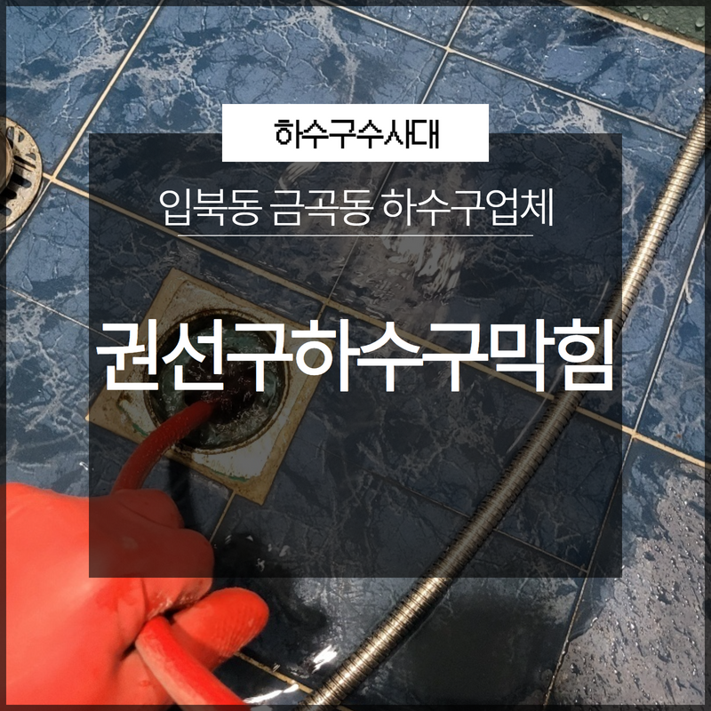
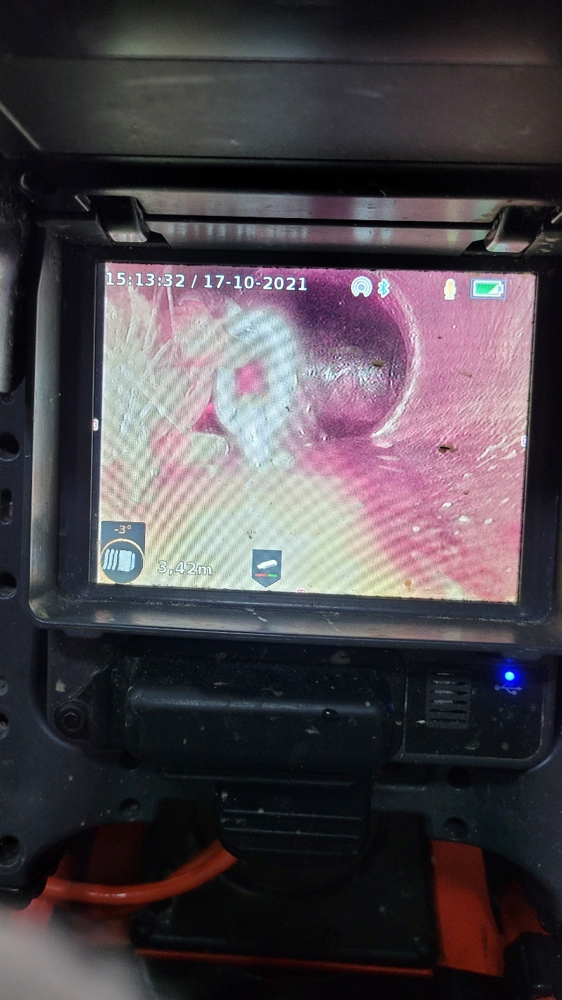
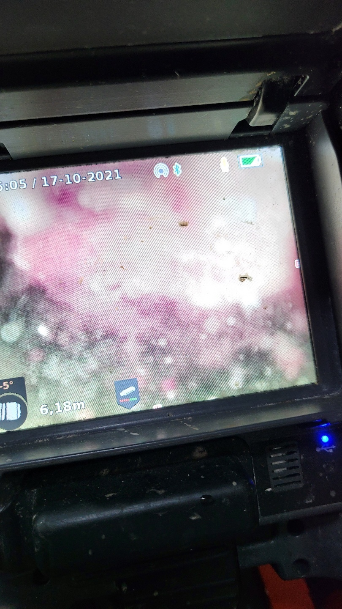
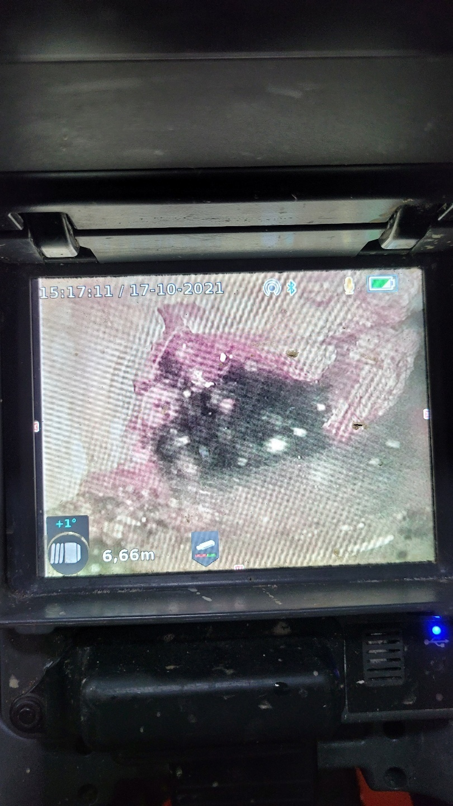
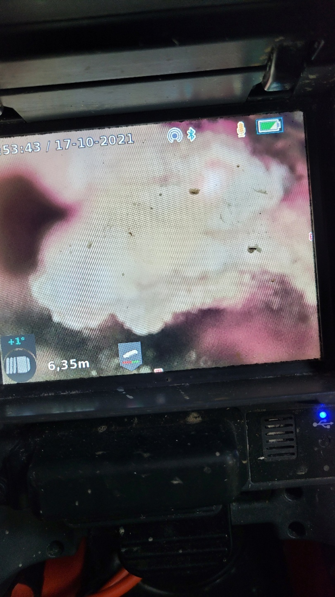
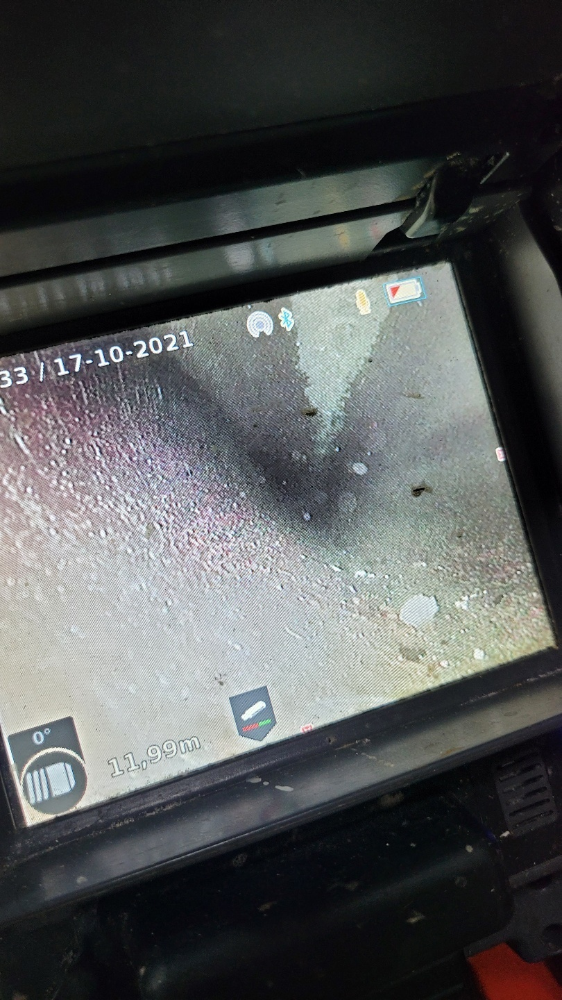
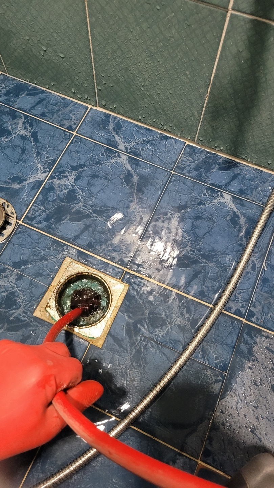

🏠 권선구하수구막힘 입북동 금곡동 하수구업체 관리를 소홀히 하면 안돼요!
수원 싱크대막힘 전문 시공 후기

📋 작업 개요
- 위치: 수원
- 서비스 유형: 싱크대막힘, 하수구막힘, 배관막힘, 역류해결
- 작업 일시: 2023. 1. 29. 17:23
- 업체명: 하수구수사대 (010-5615-2118)
🔍 문제 상황
안녕하세요 하수구수사대입니다.
일상생활에서 가장 큰 불편함을 초래하게 되는 문제가 바로 화장실이나 싱크대가 막히면서 생기는 문제라고 할 수 있습니다. 배관시설이 막히게 되면 각종 악취와 오물로 인해서 문제가 크지 않을 수 있는데 이러한 상황은 언제 어디서든 갑작스럽게 찾아올 수 있다고 할 수 있습니다. 특히 배관은 눈에 보이지 않는 것이다보니 관리가 더 소홀해질 수 있는데요 이로 인해서 차후에 발생하는 문제도 더욱 심해질 수 있습니다.
비가 많이 오는 장마철에는 유입되는 이물질과 오염물질들로 인해서
더욱 심각한 막힘이 발생할 수 있고 지금 같은 겨울철에는 동파의 우려도 있기 때문에 주의를 하시는 것이 필요합니다. 이러한 문제가 발생을 하게 된다면 그 즉시 전문 업체를 통해서 해결을 하시는 것이 필요합니다. 이번 현장은 권선구하수구막힘 입북동 금곡동 하수구업체의뢰로 방문을 한 곳인데요 현장의 해결 사례를 통해서 배관 막힘은 어떻게 해결해야 하는지를 알려드리도록 하겠습니다.

🔎 원인 분석
💡 전문가 진단: 비가 많이 오는 장마철에는 유입되는 이물질과 오염물질들로 인해서
배수관이 막히게 되면
내부 상태가 더럽고 이물질들이 많이 쌓여있는 상황이기 때문에 공기를 타고 악취까지 올라오게 되어서 우리가 생활하는 공간을 불편하게 만들 수 있습니다. 그래서 항상 배관 막힘 현장은 빠른 해결이 필요하다고 할 수 있는데요 권선구하수구막힘 입북동 금곡동 하수구업체 현장 또한 발 빠르게 방문을 해서 문제를 해결해 드렸습니다.
이번에 작업을 의뢰해 주신 현장 같은 경우는
다세대주택으로 1층을 제외한 다른 곳은 일반주택으로 되어 있는 곳이었습니다. 1층에는 매장 겸 사무실로 운영을 하고 계시는 상황이었는데요 언제부터인가 화장실이나 싱크대를 사용하게 되면 물이 천천히 배수가 되고 있다는 느낌을 받았다고 합니다. 그러다 갑작스럽게 완전히 배관이 막히게 되는 상황이 발생하게 된 것이었습니다.

🔧 작업 과정
고객님께서는 이렇게 갑작스럽게 문제가 발생할 것이라고는 예상하지 못한 상황이라 많이 당황스러웠다고 하셨는데요 우리가 일상에서 생활을 하는 모든 공간에는 눈에 보이지 않지만 이렇게 배관들이 존재를 하는데요 그렇기 때문에 이러한 문제는 언제 어디서든지 발생을 할 수 있는 것입니다.
하지만 이렇게 갑작스럽게 문제가 발생하더라도
당황하지 마시고 즉시 전문가를 통해서 점검 및 시공을 받게 되면 보다 빠르고 신속하게 문제를 해결하실 수 있습니다. 권선구하수구막힘 입북동 금곡동 하수구업체 현장에 도착을 해서 매장 내부로 진입을 해보았을 때 바닥에는 온통 물이 고여있는 상황이었는데요 일상생활이 완전히 불가능해진 상황이었습니다.
욕실 배수구 쪽에서는 역류가 일어나다 보니 물이 빠지지 않는 상황이었고 다른 곳에서 사용한 물도 함께 역류가 되고 있는 상황이었습니다. 그래서 빠르게 원인을 찾아야 했는데요 하지만 이미 물과 이물질이 넘쳐흐르는 상황이라 작업이 쉽지 않았습니다. 그래서 가장 우선적으로 고인 물을 먼저 제거해 주는 작업을 진행을 하였는데요 석션 기를 이용해서 배수구 입구를 막고 있는 이물질들을 제거해 주면서 통수를 하는 작업을 진행하였습니다.
이 작업을 한 다음 본격적으로 배관의 이물질들을 제거하는 작업을 하였는데요 전문 장비를 이용해서 배관 벽에 붙어있는 이물질들을 제거를 하고 흡입을 한 후에 배관 내부의 잔여 이물질들을 씻어내는 작업을 하였습니다. 이를 통해서 모든 이물질들을 깨끗하게 제거를 한 후에 현장의 작업을 마무리하였습니다.
빠른 해결에 고객님께서도


✅ 작업 완료
아주 만족해하셨습니다.
경기도 수원시 권선구 매송고색로533번길 7 상가동 B층 01호 298




⚠️ 주방 싱크대 배관 막힘 예방 수칙
- ✅ 기름기가 묻은 식기나 프라이팬은 설거지 전 키친타올로 반드시 기름때를 닦아내세요.
- ✅ 주기적으로 싱크대 개수대에 뜨거운 물을 가득 받아 한 번에 내려 배관 내부 기름을 씻어내세요.
- ✅ 배수구 거름망을 미세한 필터로 사용하시고 음식물 찌꺼기가 틈으로 새어 들지 않게 관리하세요.
- ✅ 베이킹소다와 식초를 뜨거운 물과 함께 일주일에 한 번씩 부어주면 배관 살균과 막힘 예방에 좋습니다.
💡 핵심 정리
- 확실한 장비 작업(내시경 점검 및 샤프트 스케일링)으로 원인을 뿌리 뽑습니다.
- 작업 후 1년 이내에 동일한 부위 재발 시 100% 무상 A/S 서비스를 보장합니다.
- 서울 · 경기 · 인천 전 지역에 24시간 언제든 긴급 출동할 수 있도록 항시 대기 중입니다.
❓ 자주 묻는 질문 (FAQ)
🚨 수원 싱크대막힘 문제로 고민이신가요?
정확한 원인 진단과 확실한 시공으로 재발 없는 해결을 약속드립니다.
24시간 긴급 출동 | 서울 · 경기 · 인천 전지역 | 1년 내 재발 시 무상 A/S